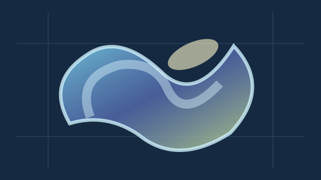
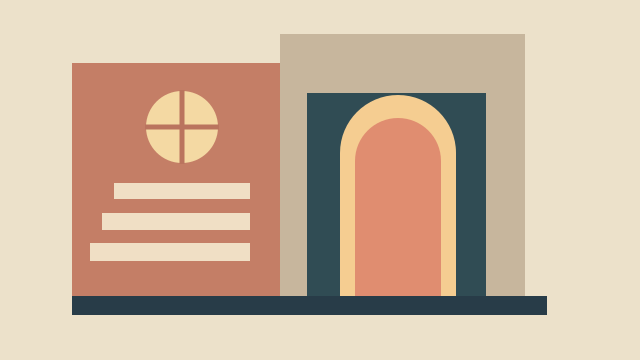
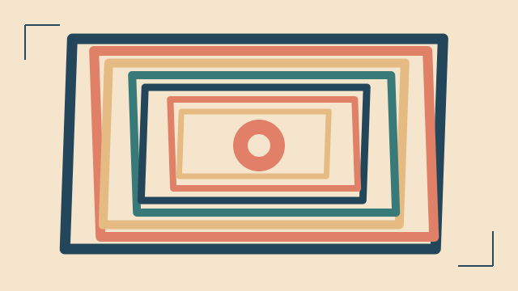

4 original vector scene sources
可编辑的独立 SVG 视觉素材；没有 WebGL、3D 渲染器或外部版权媒体。

VG-031 · Glass Relief / 浮雕玻璃形态

VG-032 · Paper Architecture / 折纸建筑层景
VG-033 · Pixel Flora / 像素植物机械

VG-034 · Optical Portal / 视错觉空间入口